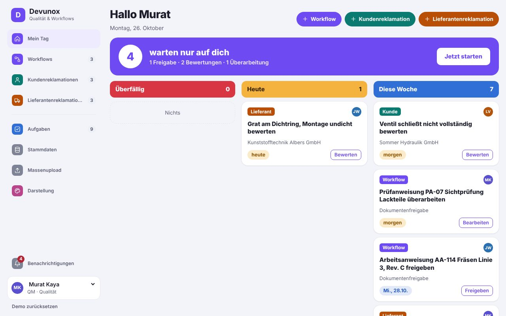
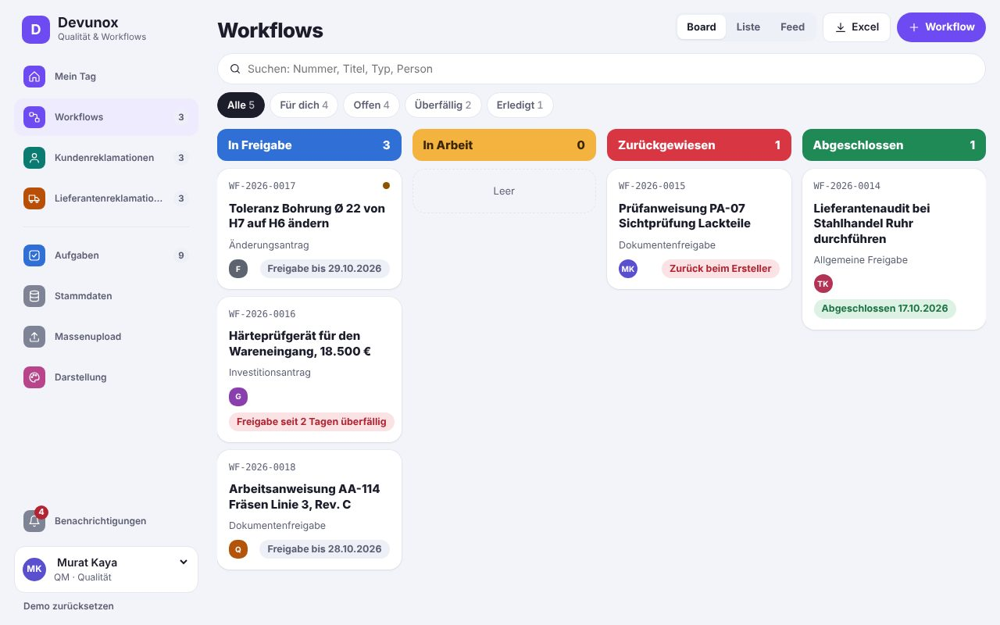
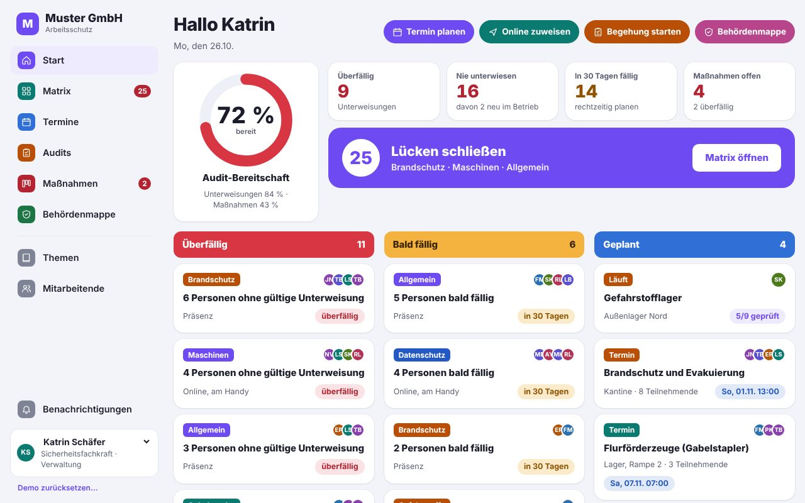
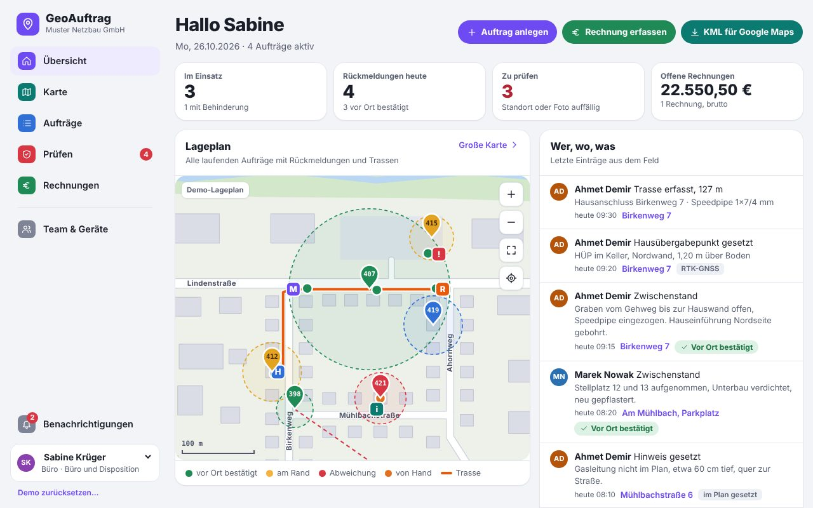
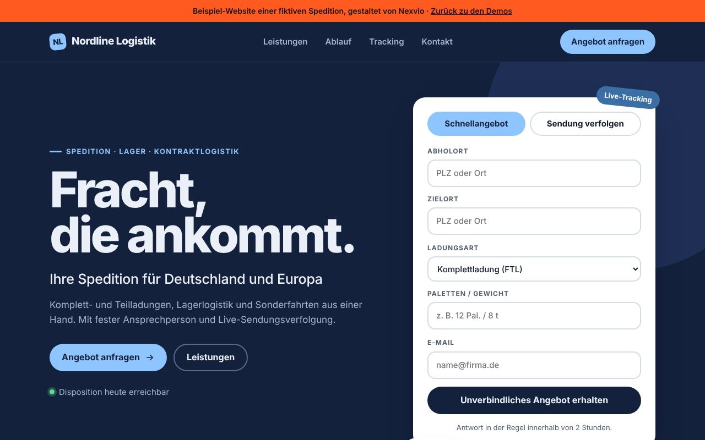

Demos
Demos to try
An app suite for workflow and complaints, a workplace safety app, a field job tool with GPS proof, a management cockpit and a website show what we build for small and mid-sized companies. Each demo runs in your browser with sample data. Anything you enter stays in your browser only.
All demos
Pick an application

Workflow and complaints in one app
Workflow management, customer complaints and supplier complaints in one app, with shared master data, tasks and Excel bulk upload. Switch between the areas in the navigation on the left.
Open app
Workflow Management
Requests, approvals and documents move through departments digitally, with approval chains, reminders and escalation.
- Approve or reject a workflow
- Create a new workflow with an approval chain
- See open tasks per person

Customer complaints (8D)
Customer complaints handled with the 8D method, with roles, deadlines, costs and escalation through to the finished 8D report.
- Create a new customer complaint
- Work through the 8D steps
- Switch between board, list and feed

Supplier complaints
Resolve defects in purchased parts with the supplier: 8D steps, deadlines, costs and escalation, all traceable in one place.
- Create a supplier complaint
- Open the 8D report
- Switch roles, for example to head of quality

Workplace safety app
Who needs which safety briefing, and what is overdue? Online briefings with quiz and signature, audits with checklists and a folder with every record the authorities ask for.
Things to try
- Open the briefing matrix
- Run through an online briefing with quiz
- Create the folder for the authorities as a PDF

GeoAuftrag: field jobs with GPS proof
Field crews report from their phone with automatic location and photo stamp, record cable routes and set markers. The office sees who did what and where, and adds invoices.
Things to try
- Send a report from your phone
- Simulate a wrong location and review it under “Prüfen”
- Record a cable route on the map

Management cockpit
Sales, production, quality, purchasing and finance at a glance. With drill-down, filters, saved views and Excel upload for your own figures.
Things to try
- Click a KPI to drill down
- Filter by plant and region
- Upload your own Excel file

Website for a freight forwarder
Sample website for the fictional Nordline Logistik, with a quick quote, shipment tracking, services and process. Works on desktop and phone.
Things to try
- Switch between quick quote and tracking
- Open the page on your phone
The demos are in German.
Every demo also runs on your phone. GeoAuftrag uses real GPS there once you allow location access.
Tell us what costs you time
In a free intro call we find out where automation or custom software pays off for you.
Request an intro call